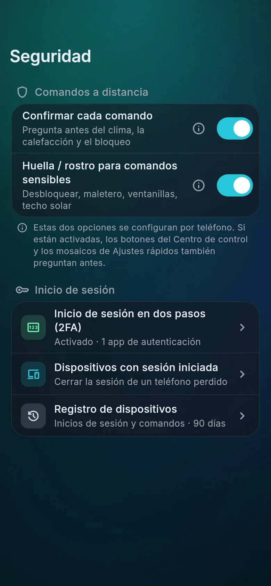
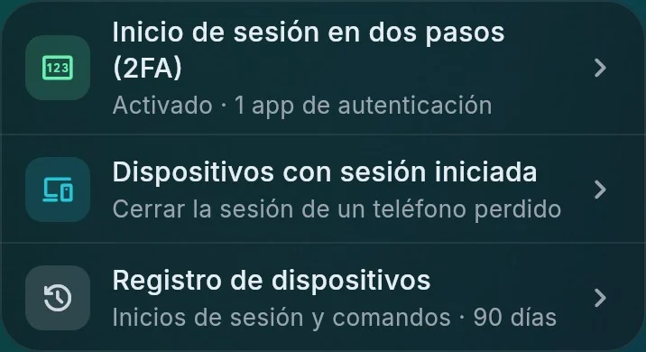
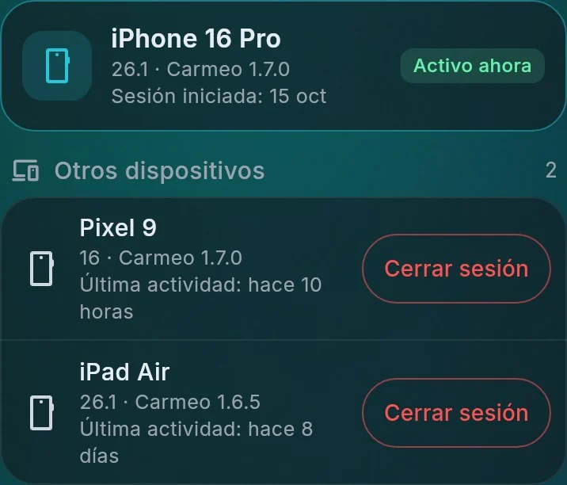
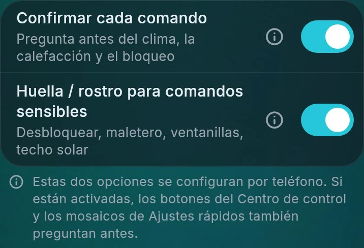
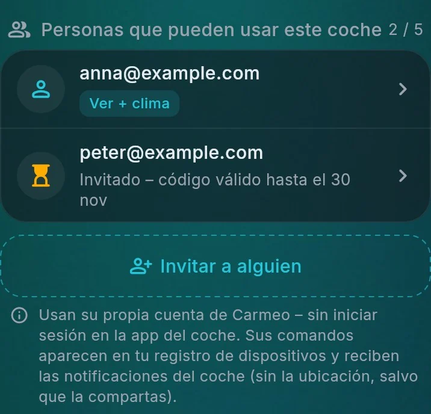
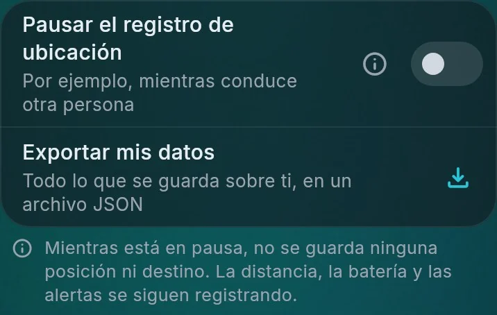

Seguridad
Pensada para algo tan valioso como tu coche.
Inicio de sesión en dos pasos, una lista de cada teléfono conectado, un cierre en las órdenes delicadas – y reglas claras sobre lo que guarda Carmeo.



Inicio de sesión en dos pasos y tus dispositivos.
Protege tu cuenta con una app de autenticación. Ve cada teléfono con la sesión iniciada, cierra a distancia la sesión de uno perdido y recibe un aviso con cada nuevo inicio de sesión. Añade otro teléfono con un código de un solo uso o un código QR, sin contraseña; el inicio de sesión en dos pasos sigue pidiendo su código. El registro de dispositivos muestra de dónde vino una orden (widget, Siri, botón rápido, notificación) y las acciones automáticas de Carmeo por su nombre (desde la 1.8.8, beta).
- Registro de dispositivos – inicios de sesión y órdenes por dispositivo, guardados 90 días.
- Sin dirección IP ni ubicación – de tus dispositivos no se guarda nada de eso.

Una segunda comprobación antes de desbloquear.
Pide una confirmación antes de cada orden remota, o Face ID o huella antes de las delicadas: desbloquear, maletero, ventanillas y techo solar. Bloqueo automático: si el coche aparcado queda abierto 10 minutos, Carmeo lo bloquea y te avisa – también antes de la preclimatización programada. Se puede desactivar, también por lugares.

Comparte el coche, no tu contraseña.
Invita hasta a cinco personas. Usan su propia cuenta de Carmeo, y tú decides qué puede hacer cada una: solo ver, ver y usar la climatización, o todo.
- La ubicación está desactivada por defecto – solo se comparte si la activas.
- Retíralo cuando quieras – el acceso termina en el momento en que quitas a alguien.

Lo que guarda Carmeo – y lo que nunca guarda.
La contraseña de tu coche se usa una sola vez para iniciar sesión en la nube del coche y nunca se guarda. Las claves de acceso y el PIN del vehículo se guardan con cifrado AES-256, en servidores de la UE. Sin anuncios ni analítica.
- Pausa el registro de ubicación – los viajes se guardan entonces sin lugares.
- Exporta o borra – descarga todo lo que guarda Carmeo, o borra tu cuenta, desde la app.
Pruébala en tu propio coche.
Carmeo es gratis. Únete al grupo de prueba abierta en iPhone o Android.